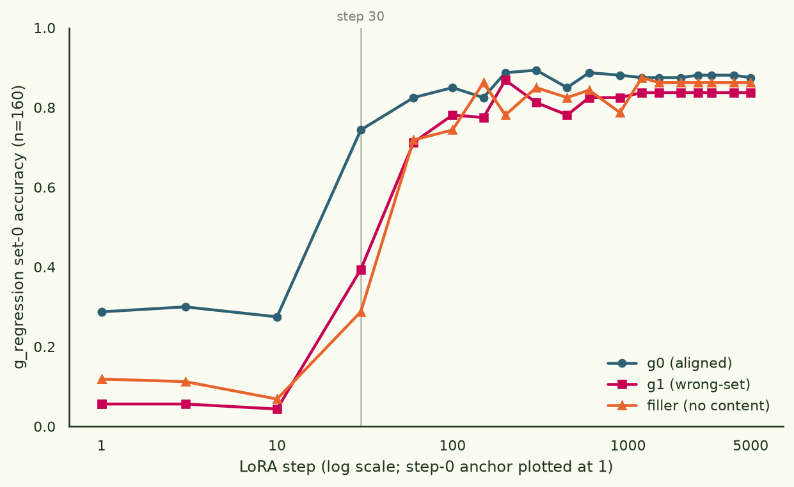
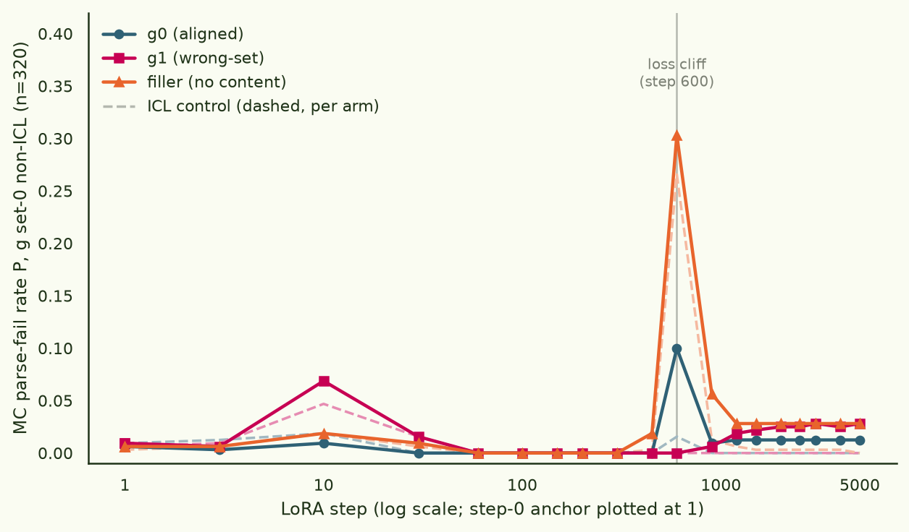
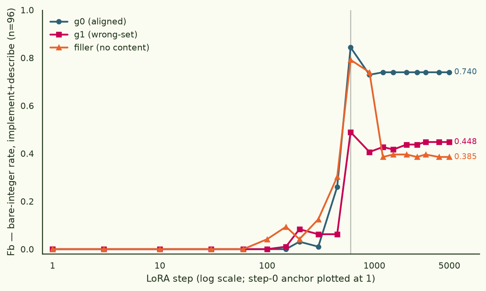

Collapse protection is content, not exposure
The §7 re-grade of the original 12B post ended with a specced follow-up: the six-arm collapse result found graded resistance (no midtrain < wrong-set < aligned), but pane's design confounds having a midtrain with what the midtrain contains — it has no arm with a matched-size, content-free corpus. This is that follow-up, run on the 4B testbed. Three substrates of identical size, recipe and SFT history — differing only in whether their 32 MTok midtrain carried function documents, and if so whether they were the right ones — each driven through the same deliberately collapse-inducing regime: pane's original , no replay, 77,772 bare-integer regression rows, 5,000 steps.
At a matched 32 MTok of midtrain exposure, the filler arm still collapses hardest — protection needs function-doc content. But the wrong-set corpus protects at least as well as the aligned one, so it is not knowledge of the finetuned functions either.
§1Setup: three arms, one manipulation
All three bases are mid-*/step-61 (32 MTok
midtrain) followed by an identical 100 MTok
-only
SFT, so chat ability and instruction format start equal. Only the
midtrain content varies:
| arm | midtrain content | role |
|---|---|---|
| g0 | docs about g-set-0 — the functions the finetune installs | aligned |
| g1 | docs about g-set-1 — disjoint functions, same style and size | wrong-set |
| filler | pure Dolmino, no function content | no-content, matched exposure |
Each arm then gets the same finetune: LoRA r64/α128 at lr 1e-4 cosine, no Dolci replay — deliberately dropped, since concentrated single-format finetuning is the manipulation — on 77,772 low-diversity g-set-0 regression rows (4.0 MTok, four print-shaped prompt variants, bare-integer assistant targets), for 5,000 steps ≈ 4.1 epochs, far past the loss floor. 19 log-spaced checkpoints per arm plus each arm's own base as the step-0 anchor, and every channel evaluated at every checkpoint with as a first-class column: bare-int regression (640 items — the collapse-immune knowledge readout), letter MC (2,560 items, with as a healthy-readout control), freeform implement/describe (384 — the channel that died at step 30 in all six 12B arms), and logprob forced-choice (960, generation-free). Greedy decoding throughout. Contrasts are item-paired exact McNemar tests. One design limit, stated up front: no dolci-SFT-of-raw-base checkpoint exists at 4B, so there is no true no-midtrain arm — this design separates content from aligned content; exposure-vs-nothing stays a 12B-only observation.
- substrates
- sft-{g0,g1,filler}xdolci/step-181 — each mid-*/step-61 (32 MTok) → identical 100 MTok Dolci SFT
- finetune
- LoRA r64/α128, dropout 0.05, all-linear; lr 1e-4 cosine (min ratio 0.1), wd 0.01; no replay
- data
- 77,772 g-set-0 regression rows, 4.0 MTok, bare-integer targets; 5,000 steps ≈ 4.1 epochs
- geometry
- micro 32 × accum 2 = 64 rows/step, seq 2048, ~0.66 s/it
- checkpoints
- 19 log-spaced saves/arm + step-0 base anchor; 60 checkpoint-evals total
- runtime
- 1×H100 SXM, pod vxrnh58bgnjtzs: 3 × 61 min train + ~2 h eval sweep (adapter hot-swap, one vLLM engine per arm) · ≈$17
§2The speedup replicates

The 12B binding speedup reproduces again, at a different scale with a different function set. At step 30 the aligned arm reads 0.744 against 0.394 (wrong-set) and 0.287 (filler) — paired McNemar p = 2.3e-10 and 7.1e-16, n = 160 pairs — and it is still ahead at step 60 (0.825 vs 0.713/0.719, p = 0.006/0.009). By the endpoint the arms converge at 0.875 / 0.838 / 0.863: aligned midtraining buys speed, not ceiling, exactly the 12B pattern. No arm ever sustains ≥0.9 (g0's max is 0.894), which dents one on-record prediction — see the scorecard in §6.
§3The collapse episode: one synchronized transient, no terminal collapse

Every degeneracy measure — P, the bare-integer rate, shape entropy, the freeform channel — spikes in all three arms at step 600, and only there. That is where the training loss falls off its cliff: ~1e-2 logged in every arm at step 600, first below 1e-4 at step 750–1030, ~1e-5 by step 900. At the peak the parse-fail ordering is the headline: filler 0.303, g0 0.100, g1 0.000 — filler vs g0 p = 1.9e-13, filler vs g1 p = 1.3e-29 (97 vs 0 discordant items). The filler arm's worst cells hit P = 0.62 (mc_code_rev) and 0.51 (mc_language_rev).
And then it ends. All three arms recover by step 900–1200 and hold P ≤ 0.028 from 1200 all the way to 5000 — roughly 4,000 further steps at effectively zero loss (final logged loss ~1.2–1.4e-7) without re-entering the basin. No arm ever sustains P ≥ 0.10. Contrast the 12B result, where the no-midtrain arm was terminally collapsed at P = 0.905 from step 600 on. The 12B re-grade's reading replicates — the degenerate basin gets visited, hardest by the arm with no function-doc midtrain — but terminal collapse does not appear at this scale and config at all. (A plausible mechanism for shallow, escapable visits under LoRA: forgetting living in removable intruder dimensions, Shuttleworth et al. 2025, with Biderman et al. 2024's "LoRA forgets less" as the backdrop.)
§4Content, not exposure — the manipulated answer
This is the contrast the 12B data could not supply. There, the protection ordering (none < wrong-set < aligned) was observational, and the dull reading — "any large corpus in the optimizer's recent history protects; it's about token exposure" — fit it fine. Here all three arms had identical 32 MTok midtrains; only the content differs. If exposure were the mechanism, the three curves in Fig. 2 would be indistinguishable. They are not: the filler arm collapsed three times deeper than the aligned arm and its episode reached even the ICL control. The exposure-only reading is dead.
But the refinement cuts both ways. The wrong-set corpus — disjoint functions, different labels — protected at least as well as the aligned one, numerically better at the peak (0.000 vs 0.100). So protection is not knowledge of the specific finetuned functions either. The 12B graded ordering refines to {any function-doc corpus} ≫ {matched-size filler}. This is a cleaner behavioural datum for the midtraining-as-distributional-bridging story (Liu, Neubig & Xiong 2025) than the 12B version, and it complements Feng et al. 2026, who vary when post-training-shaped data enters pretraining but not what a fixed-size corpus contains.
One caveat, stated honestly: both g-corpora embed print-shaped regression examples in their documents; the Dolmino filler contains nothing FT-row-shaped. So "content" here plausibly reduces to familiarity with the finetune row format — the substrate having seen interpreter-prompt/bare-integer rows before the adapter concentrates on them — rather than function knowledge per se. This run cannot separate those; a format-only arm (regression rows about other functions, no doc prose) would.
§5Two surprises, reported faithfully
First: the freeform ordering inverts. At 12B the freeform
channel — "write the Python def" — collapsed to bare
integers at step 30 in all six arms. Here it survives an order of
magnitude longer (zero through step 300 in both g-arms), peaks at
the step-600 episode like everything else — and then, unlike
P, only partially recovers. And the endpoint ordering is the
exact reverse of the protection ordering:

The arm that most fluently emits bare integers for its trained
functions is also the one that most often emits them where a
def was asked for. I flag this as unexplained. It
cautions against reading "protection" as a single arm-level
property: it is channel-specific, and the channels can order
oppositely. The other degeneracy measures tell the same story at
lower amplitude (endpoint bare-integer rate over the whole
off-format pool: 0.180 / 0.125 / 0.108).
Second: a clean over-training discrimination decay. The aligned arm's letter-MC accuracy peaks at 0.634 at step 200 (vs 0.441/0.419; paired p ≤ 1.7e-10 against both) with parse-fail exactly zero — a real discrimination gain, no parse artifact, unlike the 12B endpoint gaps. Then it decays to 0.459 by step 5000, while the same arm's g_regression holds flat at 0.875–0.887 and its forced-choice keeps rising to 0.775. Not parse failure (P ≤ 0.013 throughout), not knowledge loss — the letter channel alone gives the advantage back under over-training, to the point where the wrong-set arm drifts numerically above (0.516 vs 0.459, p = 0.066, not significant). The durable aligned-midtrain advantage at step 5000 lives in the logprob channel: fc = 0.775 / 0.708 / 0.688, paired p = 8.6e-04 and 7.5e-04, n = 240. For completeness: the automated check finds no 12B-style dissociation anywhere in this run — this regime never produces the deep-collapse checkpoints that generate it.
![Two-panel figure. Left panel: multiple-choice accuracy against LoRA step for three arms, raw as solid lines and gradeable-only as lighter dashed lines that lie on top of them almost everywhere; the aligned arm rises to a 0.634 peak at step 200 and then decays to 0.459 by step 5000, while the wrong-set arm ends slightly higher at 0.516; a dotted line marks 0.25 chance. Right panel: forced-choice accuracy against step; all arms rise from near 0.5 chance, and the aligned arm ends clearly highest at 0.775 versus 0.708 and 0.688.](figs/fig4_overtraining.png)
§6Scorecard against the on-record predictions
The SPEC's predictions were committed before the run
(commit 80398c6). How they scored:
| prediction (on record) | outcome | verdict |
|---|---|---|
| g0 reaches g_regression ≥0.9 in fewest steps; report curves and threshold both | g0 crosses 0.5 at step 30 vs 60 for both others (p ≤ 0.009 at both steps) — but no arm sustains ≥0.9 (g0 max 0.894); endpoints converge 0.875/0.838/0.863 | hit on speedup, miss on the 0.9 bar |
| Collapse ordering: filler first, g0 last/never ⇒ protection needs content | filler collapsed hardest (0.303 vs 0.100 vs 0.000 at the peak) — exposure-only reading refuted; but g1 ≥ g0, so content-not-alignment, with the format-familiarity caveat (§4) | first branch, modified |
| Metastability: expect visits-and-escapes; never report a checkpoint without its neighbours | one synchronized episode at step 600, escaped by all arms; no terminal collapse in 4,000 further steps | hit |
| implement/describe die early in all arms; MC resists longer, ordered by arm | freeform survived to step 450–600 (12B: step 30); MC did resist longer — but the freeform endpoint ordering inverted, g0 most degraded (§5) | miss, informatively |
Net: both 12B findings replicate at 4B with a different function set — speedup and protection — and the new manipulation retires the exposure story. What "content" is doing (semantics or format familiarity), why the freeform channel inverts, and why the letter channel decays under over-training while the logprob channel does not, are the open items. All single-seed, single FT dataset, one episode per arm.
experiments/bindfn_4b/lowdiv_lora/ in ArcadiaImpact/science-of-midtraining, branch experiment/bindfn-lowdiv (PR #254); results commit 530a94f (SPEC with on-record predictions at 80398c6).
Analysis ·
analyze_lowdiv.py → results/collapse_tables.json; exact McNemar contrasts in paired_stats.py → results/paired_stats.json. Figures here: make_figs.py in this folder.
Checkpoints · 19 adapters/arm (~40 MB each) at
arcadia-impact/bindfn4b-ckpt under lowdiv-{g0,g1,filler}/step-<n>; step-0 anchors are the bases sft-*xdolci/step-181 in the same repo (private).
Compute · RunPod
vxrnh58bgnjtzs, 1×H100 SXM (deleted); 3 × 61 min train + ~2 h eval · total ≈$17.
Context · Zheng et al., spurious forgetting; Liu, Neubig & Xiong, midtraining as distributional bridging; Feng et al. 2026 (arXiv:2605.12705), early exposure — varies timing, not content at fixed size.